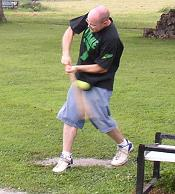
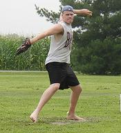
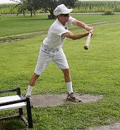

<!DOCTYPE HTML PUBLIC "-//W3C//DTD HTML 4.0 Transitional//EN">

<html>
<head>
	
	<title>Untitled</title>

</head>

<body>


</body>
</html>
<html>

<head>
<meta http-equiv="Content-Type" content="text/html; charset=windows-1252">
<meta name="GENERATOR" content="Microsoft FrontPage 4.0">
<meta name="ProgId" content="FrontPage.Editor.Document">
<title>July 4, 2004</title>
</head>

<body>

<table border="0" cellpadding="3" cellspacing="0" width="100%">
  <tr>
    <td width="100%">
      <p align="center"><font face="arial" color="#008000" size="4"><b>July 17, 2004</b></font></p>
      <table border="0" cellpadding="3" cellspacing="0" width="100%">
        <tr>
          <td width="33%" align="center"><font face="Arial" color="#008000" size="2"><br>
            Kevin Ryan made his long awaited chair baseball debut switch-hitting his way to a 1-for-11 effort.</font></td>
          <td width="33%" align="center"><font face="Arial" color="#008000" size="2"><br>
            Dan Inboden fired a 4-hitter in his first performance of the year in the 2-1 win. He also went 6-11 at the plate with a 2-run homerun that turned out to be the only runs his team would score.</font></td>
          <td width="34%" align="center"><font face="Arial" color="#008000" size="2"><br>
            Tony Cork fouls off a pitch on Saturday. Cork was 0-for-11 at the plate and suffered his second loss of the year on the mound despite allowing just 2 runs over 8 innings.</font></td>
        </tr>
        
        </tr>
      </table>
      <p>&nbsp;</td>
  </tr>
</table>

<font face="arial"><a href="bb_2004.htm">Back to 2004 Season</a><BR>
<a href="baseball.html">Back to Baseball</a>

</body>

</html>


